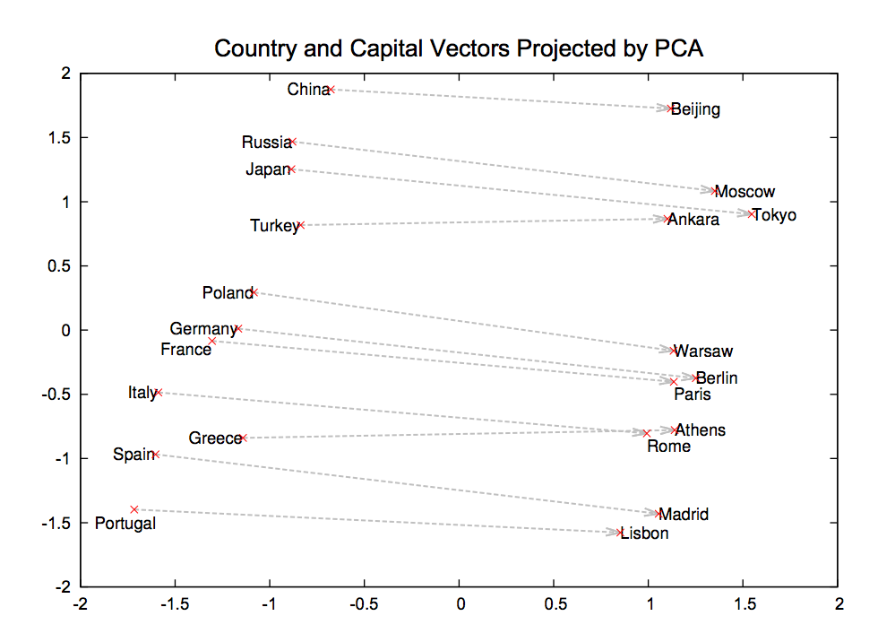

Office Automation Part 1 - Sorting Departmental Emails with Tensorflow and Word-Embedded Vectors
Practical walkthroughs on machine learning, data exploration and finding insight.
Resources

This walkthrough is comprised of three videos:
- Part 1: word2vec on Tensorflow, Modeling the Enron Email Dataset
- Part 2: Using pre-trained word vector embeddings on Enron emails
- Part 3: Classification using Tensorflow’s Wide and Deep Model
First part out of 3, word2vec on Tensorflow and modeling the Enron Email Dataset. We'll clean up the emails, model it with word2vec skip-gram and cluster it to discover themes.
Welcome to Part 1: Applying word2vec on the Enron data set
word2vec probably doesn’t need an introduction as its been around for a few years and is extremely popular in the NLP community. In a nutshell, it is a straightforward single layer neural net through which you feed large bodies of text and it will model complex word relationships. For more information on the model, check out one of the original papers: Distributed Representations of Words and Phrases and their Compositionality.

Distributed Representations of Words and Phrases and their Compositionality.
word2vec Tutorial for Tensorflow
For information on word2vec’s Tensorflow tutorial, please visit: Vector Representations of Words, meanwhile, go the the GitHub repo to copy and run the code word2vec_basic.py (this assumes you have Tensorflow up-and-running).
Here is the final logged loss along with the top word distances.
Average loss at step 100000 : 4.69704249334
Nearest to also: which, now, often, still, not, pulau, generally, it,
Nearest to on: in, through, upon, at, against, under, constituci, canaris,
Nearest to this: it, which, the, that, another, nn, balboa, some,
Nearest to new: bowled, equivalents, agouti, dasyprocta, rutger, hebrews, cardiomyopathy, cabins,
Nearest to or: and, agouti, while, than, but, operatorname, abet, thaler,
Nearest to all: many, some, these, agouti, except, mortimer, session, kifl,
Nearest to however: but, where, although, though, that, thibetanus, while, and,
Nearest to often: sometimes, commonly, widely, usually, also, generally, there, now,
Nearest to with: in, between, using, by, when, from, michelob, circ,
Nearest to can: may, would, could, will, should, must, might, cannot,
Nearest to most: more, some, less, many, kvac, bolo, several, callithrix,
Nearest to if: when, where, cannot, ursus, though, although, operatorname, thaler,
Nearest to use: balboa, albury, arrival, callithrix, adaptation, ibelin, marlow, warhead,
Nearest to war: alligator, dasyprocta, operatorname, heh, bomis, riots, subgenres, bluetooth,
Nearest to during: in, after, at, from, ursus, circ, despite, callithrix,
Nearest to may: can, would, will, could, must, might, should, upanija,Some word relationships are good, like ‘can: may, would, could, will, should, must, might, cannot’, others not so much. This is using the Text8 corpus, let’s try it with the Enron Email dataset.
Enron Corpus
“The Enron Corpus is a large database of over 600,000 emails generated by 158 employees[1] of the Enron Corporation and acquired by the Federal Energy Regulatory Commission during its investigation after the company’s collapse.” Source: Wikipedia
This dataset is quite interesting as it is one of the few large and unscrubbed email corpus available in the public domain. There are various places you can download the dataset. I went with Kaggle.com: The Enron Email Dataset as it not only has the dataset but plenty of kernels showing you how to explore, analyse and transform the data.
Here is the full source code to use the Enron dataset instead of Text8, be sure to update the ENRON_EMAIL_DATASET_PATH using the path wherever you downloaded the data.
from __future__ import absolute_import
from __future__ import division
from __future__ import print_function
import tensorflow as tf
import collections
import os
import random
import numpy as np
from tqdm import tqdm
import sys, email
import pandas as pd
import math
#########################################################
# Load Enron dataset
#########################################################
ENRON_EMAIL_DATASET_PATH = 'enron-dataset/emails.csv'
# load enron dataset
import pandas as pd
emails_df = pd.read_csv(ENRON_EMAIL_DATASET_PATH)
print(emails_df.shape)
emails_df.head()
#########################################################
# Sort out required email features: date, subject, content
#########################################################
# source https://www.kaggle.com/zichen/explore-enron
## Helper functions
def get_text_from_email(msg):
'''To get the content from email objects'''
parts = []
for part in msg.walk():
if part.get_content_type() == 'text/plain':
parts.append( part.get_payload() )
return ''.join(parts)
import email
# Parse the emails into a list email objects
messages = list(map(email.message_from_string, emails_df['message']))
emails_df.drop('message', axis=1, inplace=True)
# Get fields from parsed email objects
keys = messages[0].keys()
for key in keys:
emails_df[key] = [doc[key] for doc in messages]
# Parse content from emails
emails_df['Content'] = list(map(get_text_from_email, messages))
# keep only Subject and Content for this exercise
emails_df = emails_df[['Date','Subject','Content']]
#########################################################
# change wor2vec model to work with Enron emails
#########################################################
# point it to our Enron data set
emails_sample_df = emails_df.copy()
import string, re
# clean up subject line
emails_sample_df['Subject'] = emails_sample_df['Subject'].str.lower()
emails_sample_df['Subject'] = emails_sample_df['Subject'].str.replace(r'[^a-z]', ' ')
emails_sample_df['Subject'] = emails_sample_df['Subject'].str.replace(r'\s+', ' ')
# clean up content line
emails_sample_df['Content'] = emails_sample_df['Content'].str.lower()
emails_sample_df['Content'] = emails_sample_df['Content'].str.replace(r'[^a-z]', ' ')
emails_sample_df['Content'] = emails_sample_df['Content'].str.replace(r'\s+', ' ')
# create sentence list
emails_text = (emails_sample_df["Subject"] + ". " + emails_sample_df["Content"]).tolist()
sentences = ' '.join(emails_text)
words = sentences.split()
print('Data size', len(words))
# get unique words and map to glove set
print('Unique word count', len(set(words)))
# drop rare words
vocabulary_size = 10000
def build_dataset(words):
count = [['UNK', -1]]
count.extend(collections.Counter(words).most_common(vocabulary_size - 1))
dictionary = dict()
for word, _ in count:
dictionary[word] = len(dictionary)
data = list()
unk_count = 0
for word in tqdm(words):
if word in dictionary:
index = dictionary[word]
else:
index = 0 # dictionary['UNK']
unk_count += 1
data.append(index)
count[0][1] = unk_count
reverse_dictionary = dict(zip(dictionary.values(), dictionary.keys()))
return data, count, dictionary, reverse_dictionary
data, count, dictionary, reverse_dictionary = build_dataset(words)
del words # Hint to reduce memory.
print('Most common words (+UNK)', count[:5])
print('Sample data', data[:10], [reverse_dictionary[i] for i in data[:10]])
data_index = 0
# Step 3: Function to generate a training batch for the skip-gram model.
def generate_batch(batch_size, num_skips, skip_window):
global data_index
assert batch_size % num_skips == 0
assert num_skips <= 2 * skip_window
batch = np.ndarray(shape=(batch_size), dtype=np.int32)
labels = np.ndarray(shape=(batch_size, 1), dtype=np.int32)
span = 2 * skip_window + 1 # [ skip_window target skip_window ]
buffer = collections.deque(maxlen=span)
for _ in range(span):
buffer.append(data[data_index])
data_index = (data_index + 1) % len(data)
for i in range(batch_size // num_skips):
target = skip_window # target label at the center of the buffer
targets_to_avoid = [skip_window]
for j in range(num_skips):
while target in targets_to_avoid:
target = random.randint(0, span - 1)
targets_to_avoid.append(target)
batch[i * num_skips + j] = buffer[skip_window]
labels[i * num_skips + j, 0] = buffer[target]
buffer.append(data[data_index])
data_index = (data_index + 1) % len(data)
# Backtrack a little bit to avoid skipping words in the end of a batch
data_index = (data_index + len(data) - span) % len(data)
return batch, labels
batch, labels = generate_batch(batch_size=8, num_skips=2, skip_window=1)
for i in range(8):
print(batch[i], reverse_dictionary[batch[i]],
'->', labels[i, 0], reverse_dictionary[labels[i, 0]])
# Step 4: Build and train a skip-gram model.
batch_size = 128
embedding_size = 300 # Dimension of the embedding vector.
skip_window = 1 # How many words to consider left and right.
num_skips = 2 # How many times to reuse an input to generate a label.
# We pick a random validation set to sample nearest neighbors. Here we limit the
# validation samples to the words that have a low numeric ID, which by
# construction are also the most frequent.
valid_size = 16 # Random set of words to evaluate similarity on.
valid_window = 100 # Only pick dev samples in the head of the distribution.
valid_examples = np.random.choice(valid_window, valid_size, replace=False)
num_sampled = 64 # Number of negative examples to sample.
graph = tf.Graph()
with graph.as_default():
# Input data.
train_inputs = tf.placeholder(tf.int32, shape=[batch_size])
train_labels = tf.placeholder(tf.int32, shape=[batch_size, 1])
valid_dataset = tf.constant(valid_examples, dtype=tf.int32)
# Ops and variables pinned to the CPU because of missing GPU implementation
with tf.device('/cpu:0'):
# Look up embeddings for inputs.
embeddings = tf.Variable(
tf.random_uniform([vocabulary_size, embedding_size], -1.0, 1.0))
embed = tf.nn.embedding_lookup(embeddings, train_inputs)
# Construct the variables for the NCE loss
nce_weights = tf.Variable(
tf.truncated_normal([vocabulary_size, embedding_size],
stddev=1.0 / math.sqrt(embedding_size)))
nce_biases = tf.Variable(tf.zeros([vocabulary_size]))
# Compute the average NCE loss for the batch.
# tf.nce_loss automatically draws a new sample of the negative labels each
# time we evaluate the loss.
loss = tf.reduce_mean(
tf.nn.nce_loss(weights=nce_weights,
biases=nce_biases,
labels=train_labels,
inputs=embed,
num_sampled=num_sampled,
num_classes=vocabulary_size))
# Construct the SGD optimizer using a learning rate of 1.0.
optimizer = tf.train.GradientDescentOptimizer(1.0).minimize(loss)
# Compute the cosine similarity between minibatch examples and all embeddings.
norm = tf.sqrt(tf.reduce_sum(tf.square(embeddings), 1, keep_dims=True))
normalized_embeddings = embeddings / norm
valid_embeddings = tf.nn.embedding_lookup(
normalized_embeddings, valid_dataset)
similarity = tf.matmul(
valid_embeddings, normalized_embeddings, transpose_b=True)
# Add variable initializer.
init = tf.global_variables_initializer()
# Step 5: Begin training.
num_steps = 200001
with tf.Session(graph=graph) as session:
# We must initialize all variables before we use them.
init.run()
print("Initialized")
average_loss = 0
for step in xrange(num_steps):
batch_inputs, batch_labels = generate_batch(
batch_size, num_skips, skip_window)
feed_dict = {train_inputs: batch_inputs, train_labels: batch_labels}
# We perform one update step by evaluating the optimizer op (including it
# in the list of returned values for session.run()
_, loss_val = session.run([optimizer, loss], feed_dict=feed_dict)
average_loss += loss_val
if step % 2000 == 0:
if step > 0:
average_loss /= 2000
# The average loss is an estimate of the loss over the last 2000 batches.
print("Average loss at step ", step, ": ", average_loss)
average_loss = 0
# Note that this is expensive (~20% slowdown if computed every 500 steps)
if step % 10000 == 0:
sim = similarity.eval()
for i in xrange(valid_size):
valid_word = reverse_dictionary[valid_examples[i]]
top_k = 8 # number of nearest neighbors
nearest = (-sim[i, :]).argsort()[1:top_k + 1]
log_str = "Nearest to %s:" % valid_word
for k in xrange(top_k):
close_word = reverse_dictionary[nearest[k]]
log_str = "%s %s," % (log_str, close_word)
print(log_str)
final_embeddings = normalized_embeddings.eval()Here is the final logged loss along with the top word distances. Here too we see that word2vec did find some patterns but probably not enough to be of serious use.
Average loss at step 200000 : 3.70866189462
Nearest to but: so, and, that, i, however, he, will, which,
Nearest to c: b, m, kumar, results, h, d, l, nsf,
Nearest to or: and, UNK, the, seek, then, enron, to, any,
Nearest to for: of, to, at, in, on, with, pecorp, when,
Nearest to which: that, what, who, this, and, also, but, no,
Nearest to s: communications, is, the, has, to, and, development, enronxgate,
Nearest to one: a, it, two, this, the, each, some, he,
Nearest to we: they, i, you, he, there, she, it, this,
Nearest to your: their, my, his, our, the, her, any, this,
Nearest to has: had, have, was, is, by, s, recently, ve,
Nearest to com: development, communications, enronxgate, ect, www, na, enron, pm,
Nearest to and: but, or, so, font, with, UNK, please, at,
Nearest to sent: cc, pm, mailto, ect, subject, truorange, UNK, wanted,
Nearest to thanks: please, regards, forwarded, as, original, i, akamaitech, when,
Nearest to said: factor, realize, beyond, determined, will, brussels, dale, says,
Nearest to their: your, his, its, our, the, my, these, her,And now let’s cluster these word-embedded vectors so we can understand some of the over-arching themes contained in this dataset:
#########################################################
# Check out some clusters
#########################################################
# create a dataframe using the embedded vectors and attach the key word as row header
import pandas as pd
enrond_dataframe = pd.DataFrame(final_embeddings)
enrond_dataframe = enrond_dataframe.set_index([ reverse_dictionary.values()])
# See what it learns and look at clusters to pull out major themes in the data
CLUSTER_SIZE = 300
# cluster vector and investigate top groups
from sklearn.cluster import KMeans
kmeans = KMeans(n_clusters=CLUSTER_SIZE)
cluster_make = kmeans.fit_predict(enrond_dataframe)
labels = kmeans.predict(enrond_dataframe)
import collections
cluster_frequency = collections.Counter(labels)
print(cluster_frequency)
cluster_frequency.most_common()
clusters = {}
n = 0
for item in labels:
if item in clusters:
clusters[item].append(list(enrond_dataframe.index)[n])
else:
clusters[item] = [list(enrond_dataframe.index)[n]]
n +=1
for k,v in cluster_frequency.most_common(100):
print('\n\n')
print('Cluster:', k)
print (' '.join(clusters[k]))I was not overwhelmed by the resulting clusters eventhough we can see beginnings of themes. This is undoubtedly because the Enron email corpus just isn’t big enough for word2vec. You could definitely use tweak the word2vec and even use the Continuous Bag-of-Words model (CBOW) model. In the next video, we’ll use pre-trained vector embeddings and you will be surprised by the clarity a large and complex word-vector embedding understanding makes!!
Cluster: 42
october november january center june december london march april details july february dec nov proposal oct hourahead puc beginning sept eastern club partnership encourage nature sep camp signing route apologize forgot thurs marks ho ave lv founded midnight kit camera mead vast hoecker agriculture stood exceeded noble injuries felicia complained dakota incorporates empire conner comparing
Cluster: 251
day week year long month address years days hour future period anyone holiday closing bottom regular bandwidth limits materials jerry conflict completion omniorgdontdoublebook allegheny photos shona fr pain herod lift evan kid chicken useremail cogeneration handful crane accountants rms listings adults attn depreciation mentions. virgo vng